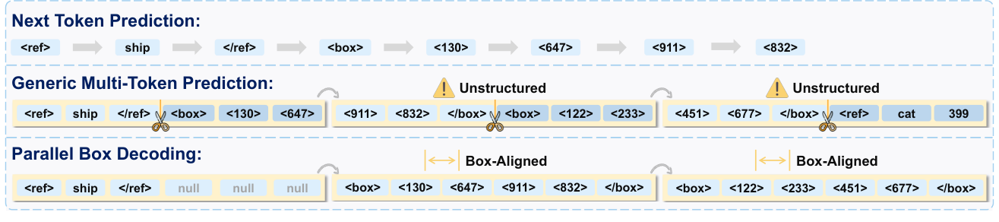
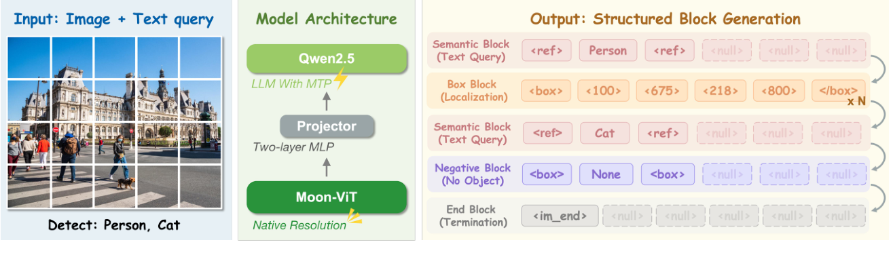
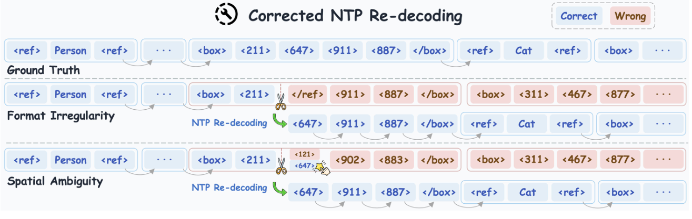

五分钟重建
逐 token 生成框坐标需要多次 forward。随意把 token 分块，又可能拆散同一个框。LocateAnything 把框作为固定长块，让同块位置并行预测。
把框对齐成块
一个框块有 6 格，包括结构 token 和四个坐标。框与框按顺序生成，同一个框内部并行。
同时练接龙与填空
NTP 流练逐词生成，MTP 流保留块首 token、遮住其余位置。两流隔离，防止从完整答案流偷看坐标。
可疑块局部回退
Hybrid 先并行生成。格式异常，或低置信且候选跨度大时，丢弃当前问题块，用 NTP 重写，再继续并行。
具体例子（教学假设）：一个坐标 top-1 概率为 0.6，top-5 跨度为 40。它不满足空间歧义的双条件；若跨度改为 100，才同时满足低于 0.7 与大于 80。格式错误另有独立触发条件。
边界：同块互见的是当前输入与 mask 位置，不是尚未生成的真实坐标。联合 token 交叉熵能学习几何规律，但不等于硬性保证每个框合法。
先预测，再展开答案
置信度为 0.9、跨度为 100，且格式合法时，是否因空间歧义回退？
查看机制解释
不回退。空间歧义要求两个条件同时满足，只有跨度大还不够。这个结论只描述触发规则，不保证该框一定正确。
关掉提示后解释：为什么 Hybrid 只重写坏块，而不需要把整段输出从头重做？
2026-10-04：讲解与练习待试用，本次未进行理解检验；此处不记录复测通过。
论文图解



一页看懂
02问题
VLM 检测把框序列化成 token 流，一个词一个词蹦：一个框 6+ 步，N 个框线性放大（H100 上 Qwen3-VL 仅 ~1.1 框/秒）。坐标之间是几何整体，却被迫独立串行猜，误差滚雪球。通用 MTP 随便切块并行，又会学跨框跨类的假关联。
方法
把解码粒度从「token」提升到「整个框」：同一份答案教两种格式，接龙卷保底（逐词）、填空卷提速（每块只留第一格，其余一次填出）。推理默认走填空，一个框一步 forward；填得可疑就用接龙逐词重写这一块再切回。
结果
Hybrid 12.7 框/秒，是 Rex-Omni 的 2.5 倍、Qwen3-VL 的 10 倍以上；贴边精度（LVIS F1@0.95 31.1 vs 别家 ~20）大幅领先。方法本体贡献有限，另一半靠 12M 图 / 138M 查询 / 785M 框的数据引擎。
LocateAnything 把一个框对齐成固定长 token 块，在框内并行生成坐标，必要时只对不可靠的块退回逐词解码。
关键机制：框 = 一块填空
03词表里坐标是 [0,1000] 各一个词，「热狗在框 (342,567)-(890,345)」就是一句话 <ref> hot dog </ref> <box> 342 567 890 345 </box>。旧法把它当接龙，一次 forward 只能蹦一个词（Transformer 只取最后一个位置的预测）。
<box>342567890345</box><box> 342 567 890 345 </box>图注：PBD 靠的是 Transformer 被浪费的能力。训练时每个位置都学「预测下一词」，自回归解码却只取最后一位。PBD 把未来 5 个槽位摆成 MASK，一次把整框填出来，一个框从 6 步变 1 步。
训练时同一份答案排成两种格式（L = L_ntp + L_blk）：接龙卷喂完整序列练逐词；填空卷每块只留首 token 后 5 格涂 MASK 练整块。填空卷的 4 个坐标一起挨罚，模型要拿满分就得让四数构成合法框，这个几何约束被焊进权重，换回逐词推理时照样生效。
关键机制：Hybrid 回退与歧义触发器
04并行偶尔整块填歪：类别边界犹豫时块内混进结构 token 和坐标 token（格式乱）；密集网格里坐标滑进两物体中间（空间歧义）。Hybrid 每块填完就验置信，可疑就作废这块、退回上一块定稿处、改用接龙逐词重写这一块，写完再切回填空。
| 候选分布（top-1 概率 / top-5 极差） | 模型内心 | 回退？ |
|---|---|---|
| 低 / 大 | 候选在坐标轴上撕裂到相距很远的两个位置，不知道框边贴哪个物体（真空间歧义） | 回退 |
| 低 / 小 | 在 342 和 343 间像素级犹豫，落在同一物体内 | 否，NTP 也不会更好 |
| 高 / 大 | 对首选很笃定，尾巴长无关紧要 | 否 |
触发器不是查「有没有不确定」，是查候选分布的「撕裂」：两条件（top-1 概率 < 0.7 且 top-5 极差 > 80）同时满足，才是慢工出细活能救的场景。极差量的是模型内心的动摇范围，不是框的尺寸。
关键数字
05| COCO-only 消融 | F1 | 机制 |
|---|---|---|
| PBD Slow（L_ntp + L_blk） | 52.1 | 几何联合监督压进权重，NTP 解码也生效 |
| Quantized-NTP（旧坐标序列） | 50.1 | 逐 token 孤立监督 |
| 只训 L_ntp（块已对齐但没练填空） | 50.1 | 零增益：增益全来自 L_blk |
| 结构无关 MTP（SDLM-B6） | 46.1 | 跨框跨类虚假相关，又慢又差 |
两腿走路：方法本体在无大数据时只 +1.5~2.0（51.6 vs 50.1），加 138M 数据后 COCO 到 54.7（数据贡献约 +3，自行对比）。纯 Fast 复杂场景掉精度（49.6），最高精度场景请用 Slow。
卡壳点
06Q：第一版讲解看完说"还是没看懂具体怎么做的"，卡在哪？
卡在机制没落到 token 级操作。重讲的三步走通：① 原材料：框 = 一串词（结构词 + 坐标词），旧法一个 forward 蹦一个；② Transformer 天生"每个位置都预测下一词"，只是自回归只取最后一个：PBD 把浪费的位置用起来，训练时专出"填空题"（块留首格、后 5 格 [MASK]、一次填）；③ 推理 = 只做填空，一段段填。教训：这篇的机制必须讲到 token 级演算才能建立直觉，纯架构图讲不通。
Q：坐标并行出、没有先后，凭什么"互相约束"？
不是先生成 x1 再传给 x2。四个 mask 位置共享上下文，在块内双向交互，并同时接受各位置的 token 交叉熵监督。共享权重由此学习框结构。实际目标没有额外的“整框合法才得分”判卷器，位置也读不到尚未生成的真实坐标。并行预测减少串行错误传递，但不保证四个预测统计独立或每个框都合法。
Q：歧义触发器为什么要求两个条件同时满足？（初答把极差理解成框大小，偏了）
先澄清：条件 2 的"top-5 极差 > 80"指 5 个候选坐标词在 [0,1000] 坐标轴上互相差多远，是模型内心动摇的范围，不是框尺寸。双条件合成一种检测：候选分布是否"撕裂"。单边情形都是正常尾巴：top-1 低但候选挤一团（极差小）= 边界像素级犹豫、落在同一物体内，NTP 也不会更好；top-1 高但候选散布开 = 有明确首选、尾巴长无关紧要。只有"不自信 + 候选在几何上严重分裂"（比如同时往 200 和 800 两个位置探头）才说明模型真不知道框边贴哪、可能滑进两物体中间（Spatial Ambiguity），NTP 慢工才有救。
Q：PBD-Slow 也是 NTP 解码，凭啥比旧 Quantized-NTP 高 +2？（消融归因）
初答"两种形式互相促进"太泛、抓不到点。决定性数据点是 Table 6c 第一行：只训 Lntp（表征已经块对齐）→ Slow 50.1，跟旧 Quantized-NTP 分毫不差：只把坐标包成块、不加填空监督，零增益。所以 +2 只有一个来源：Lblk 这条块级填空损失。它的作用不是"教并行"（Slow 不并行），而是用"同块各位置共同接受 token 交叉熵监督"把几何联合约束压进共享权重，x1 的分布不再孤立被评、和 y1/x2/y2 绑一起评；这份结构化监督在权重里沉淀后，换回 NTP 推理依然生效。这就是论文 "box-aligned formulation provides stronger supervision than 1D serialization, without sacrificing throughput" 的意思：精度收益从"必须靠并行"里解放出来了。
Q：通用 MTP（SDLM/BlockDiff）为什么又慢又差？
结构无关切块让块边界大概率落在无意义处，一个块同时装"上一框尾巴坐标 + 下一类别的开头词"，模型被迫拟合横跨框边界、横跨类别的虚假相关（共现统计，非真实规律），纯消耗容量还错误传播。加速弱是因为块内容不连贯，实际可用性差（SDLM 只到 ~5.5 BPS）。PBD 用"块 = 框"把这个伪模式源头拆掉。
2026-10-04 核对原文 §3.2：历史问答中「整块全对才拿分」「合法框约束直接入 loss」是过强类比。实际为两种序列的 token 交叉熵联合训练。Table 6 的增益支持结构化训练有效，不证明增加了硬几何损失。
关联与来源
07RELATED
SOURCE
Y4IH7DBI / BTHUC235（summary 质量高，四处修正见 markdown 备注）